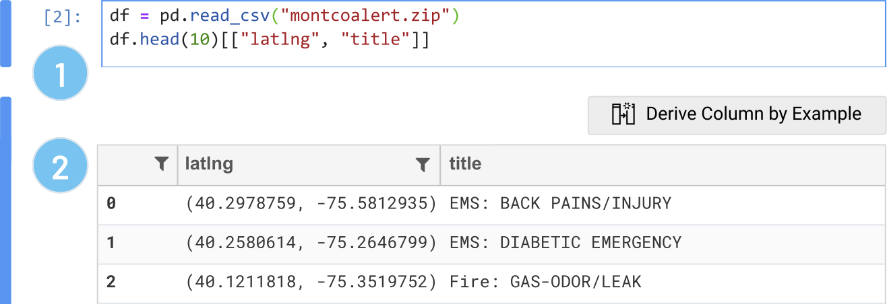
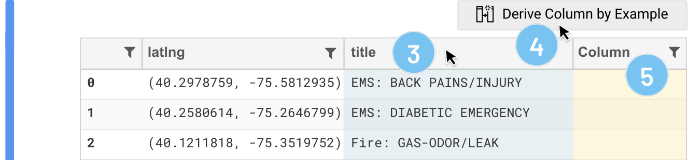
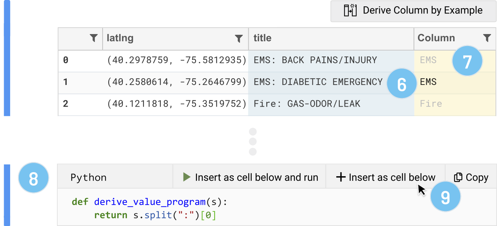
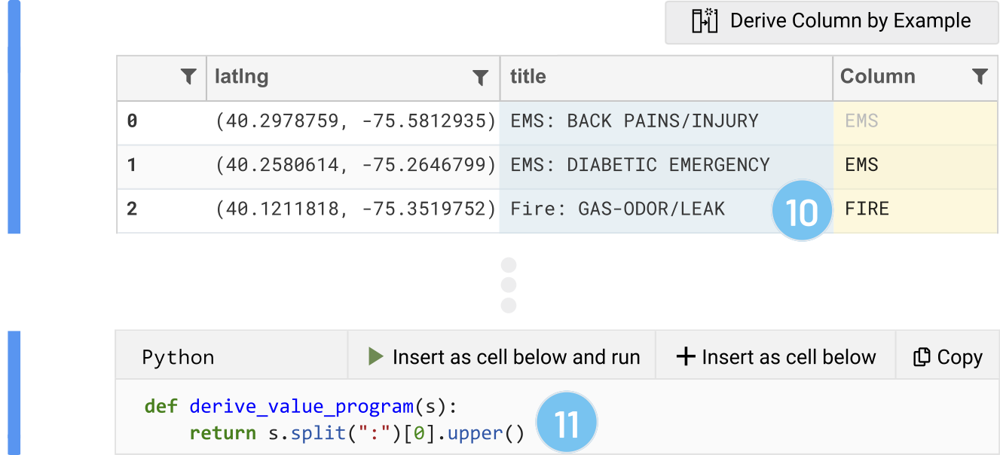
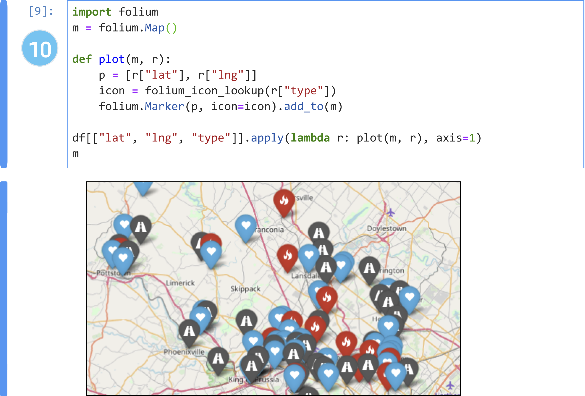
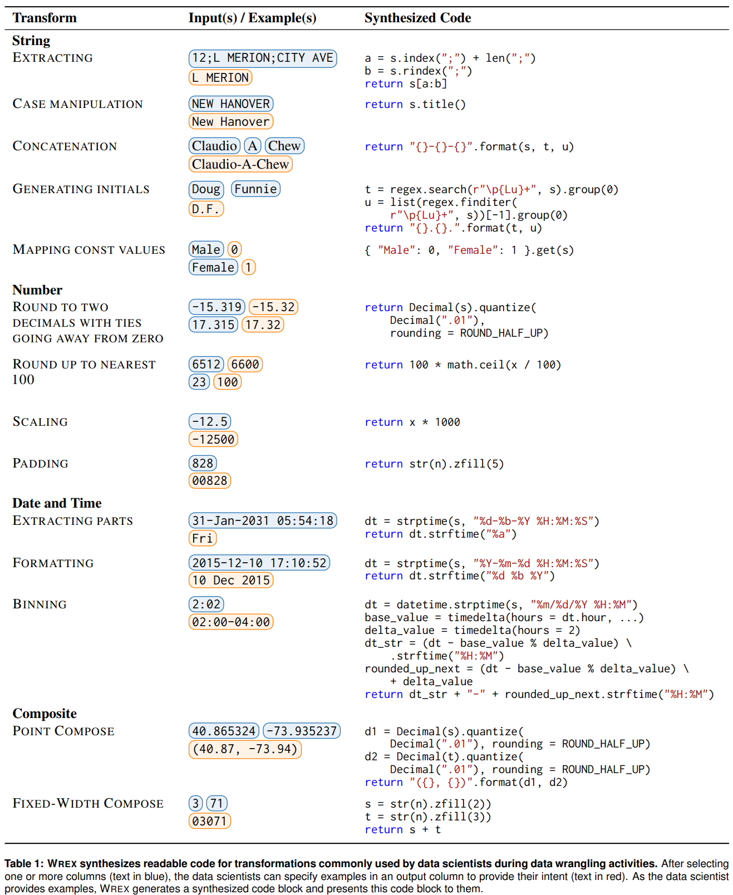
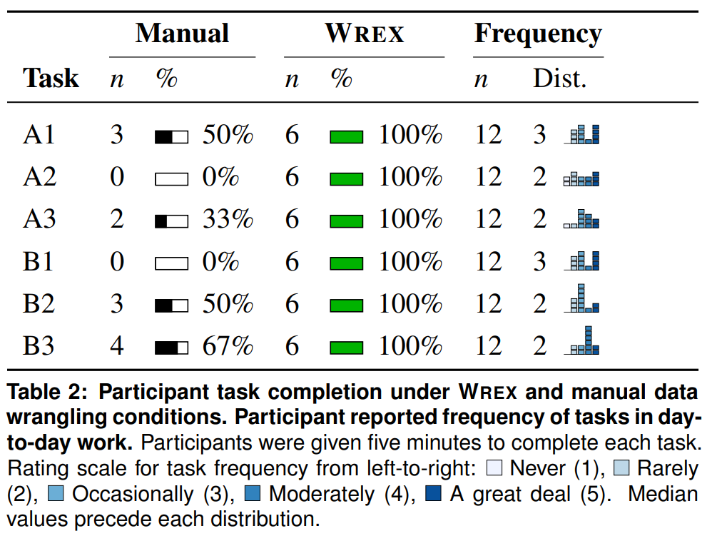
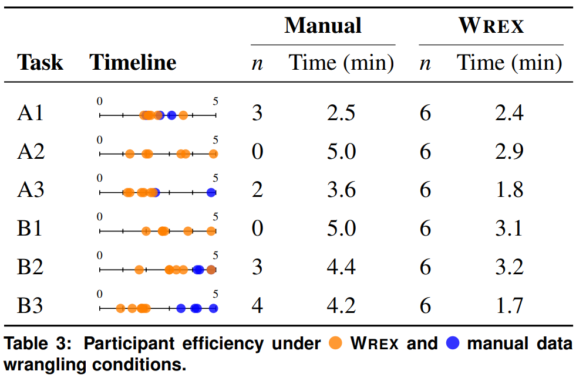
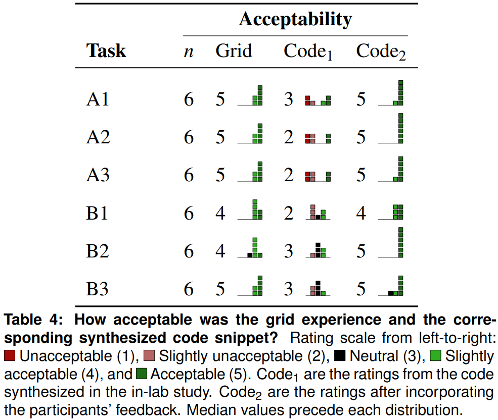

Wrex was published at CHI 2020 and won a best paper award. It was the result of a 6 month internship with the Microsoft PROSE team.
Abstract: Data wrangling is a difficult and time-consuming activity in computational notebooks, and existing wrangling tools do not fit the exploratory workflow for data scientists in these environments. We propose a unified interaction model based on programming-by-example that generates readable code for a variety of useful data transformations, implemented as a Jupyter notebook extension called Wrex.
User study results demonstrate that data scientists are significantly more effective and efficient at data wrangling with Wrex over manual programming. Qualitative participant feedback indicates that Wrex was useful and reduced barriers in having to recall or look up the usage of various data transform functions.
The synthesized code allowed data scientists to verify the intended data transformation, increased their trust and confidence in Wrex, and fit seamlessly within their cell-based notebook workflows. This work suggests that presenting readable code to professional data scientists is an indispensable component of offering data wrangling tools in notebooks.
Data wrangling is a difficult and time-consuming activity. Consequently, data scientists spend a substantial portion of their time preparing data rather than performing data analysis tasks such as modeling and prediction.
Through formative interviews with seven professional data scientists, we identified an unaddressed gap between existing data wrangling tools and how data scientists prefer to work within their notebooks.
DG1: Data wrangling tools should be available where the data scientist works—within their notebooks.
First, data scientists did not want to leave their native notebook environment to perform wrangling. This lead to design goal 1 (above).
DG2: Data wrangling tools should produce code as an inspectable and modifiable artifact, using programming languages already familiar to the data scientist.
Second, data scientists were reluctant to use data wrangling tools that transformed their data through "black boxes", and instead wanted to inspect the code that transformed their data. This lead to design goal 2 (above).
To address this gap, we introduce a hybrid interaction model that reconciles the productivity benefits of interactivity with the versatility of programmability called Wrex.

Wrex is a programming-by-example environment within a computational notebook, which supports a variety of program transformations to accelerate common data wrangling activities. (A) Users create a dataframe with their dataset and sample it. (B) Wrex's interactive grid where users can derive a new column and give data transformation examples. (C) Wrex's code window containing synthesized code generated from grid interactions. (D) Synthesized code inserted into a new input cell. (E) Applying synthesized code to full dataframe and plotting results.
Dan is a professional data scientist who uses computational notebooks. He has recently installed Wrex as a notebook extension. Dan has an open-ended task that requires him to explore an unfamiliar dataset relating to emergency calls (911) for Montgomery County, PA. The dataset contains several columns, including the emergency call's location as a latitude and longitude pair, the time of the incident, the title of the emergency, and an assortment of other columns.

As with most of his data explorations, Dan starts with a blank Python notebook and loads the dataset into a dataframe using pandas. He previews a slice of the dataframe, the 'latlng' and 'title' columns for the first ten rows (1). Wrex displays an interactive grid representing the returned dataframe (2). Through the interactive grid, Dan can view, filter, or search his data. He can also perform data wrangling using "Derive Column by Example".

Dan notices that cells in the 'title' column seem to start with "EMS", "Fire", and "Traffic". As a sanity check, he wants to confirm that these are the only types of incidents in his data, and also get a sense of how frequently these types of incidents are happening. Dan selects the 'title' column by clicking its header (3), then clicks the "Derive column by example" button to activate this feature (4). The result is a new empty column (5) through which Dan can provide an example (or more, if necessary) of the transform he needs.
He arbitrarily types in his intention, "EMS", into the second row of the newly created column in the grid (6). When Dan presses Enter or leaves the cell, Wrex detects a cell change in the derived column. Wrex uses the example provided by Dan ("EMS") with the input example taken from the derived from column 'title' ('EMS: DIABETIC EMERGENCY') to automatically fill in the remaining rows (7).

In addition, Wrex presents the actual data transformation to Dan as Python code through a provisional code cell (8). This allows Dan to inspect the code Python code before committing to the code. In this case, the code seems like what he probably would have written had he done this transformation manually: split the string on a colon, and then return the first split. Dan decides to insert this code into a cell below this one, but defers executing it (9). If Dan had actually intended to uppercase all of the types, he could have provided Wrex with a second example: "Fire" to "FIRE". If desired, Dan could have also changed the target from Python to R for comparison (or even PySpark), since Dan is a bit more familiar with R.
Since the new input cell is just Python code, Dan is free to use it however he wants: he can use it as is, modify the function, or even copy the snippet elsewhere. Dan decides to apply the synthesized function to the larger dataframe—this results in adding a 'type' column to the dataframe.

Having wrangled the 'title' column to 'type', and given the 'latlng' column already present, Dan thinks it might be interesting to plot the locations on a map. To do so, the 'latlng' column is a string and needs to be separated into 'lat' and 'lng' columns. Once again, he repeats the data wrangling steps as before: Dan returns a subset of the data, and uses the interactive grid in Wrex to wrangle the latitude and longitude transforms out of the 'latlng' column. He applies these functions to his dataframe. Having done the tricky part of data wrangling the three columns—'lat', 'lng', and 'type'—he cobbles together some code to add this information onto 'folium' (10), a map visualization tool.

Like the data scientists in our study, Dan finds that data wrangling is a roadblock to doing more impactful data analysis. With Wrex, Dan can accelerate the tedious process of data wrangling to focus on more interesting data explorations—all in Python, and without having to leave his notebook.
Wrex is implemented as a Jupyter notebook extension. The front-end display component is based on Qgrid, an interactive grid view for editing data frames. Several changes were made to this component to support code generation:
To automatically display the interactive grid for dataframes, the back-end component injects configuration options to the Python pandas library and overrides its HTML display mechanism.

The program synthesis engine that powers Wrex substantially extends the FlashFill toolkit, which provide several domain specific languages (DSLs) with operators that support string transformations, number transformations, date transformations, and table lookup transformations. A technical report by Gulwani et al. formally describes the semantics of extensions; Wrex uses these extensions and surfaced this PBE algorithm through an interaction that is accessible to data scientists.
12 data scientists (10 male), randomly selected from a directory of computational notebook users with Python familiarity within a large, data-driven software company. They self-reported an average of 4 years of data science experience within the company. They self-rated familiarity with Jupyter notebooks with a median of "Extremely familiar" (5) and their familiarity with Python at a median of "Moderately familiar" (4) on a 5-point Likert scale.
Participants completed six tasks using two different datasets. These tasks involved transformations commonly done by data scientists during data wrangling, such as extracting part of a string and changing its case, formatting dates, time-binning, and rounding floating-point numbers.
Participants were assigned A and B datasets through a counterbalanced design, such that half the participants received the A dataset first (A-dataset group), and the other half received the B dataset first (B-dataset group). We randomized task order within each dataset to mitigate learning effects.
They first completed three tasks with a Jupyter notebook (manual condition). They had 5 minutes per task to read the requirements of the task and write code to complete the task.
At the end of the manual condition, we interviewed the participants about their experience and asked them to complete a questionnaire to rate aspects of their experience.
Next, participants completed a short tutorial that introduced them to Wrex. After participants completed the tutorial, they moved on to the second set of tasks, this time using Wrex with conditions similar to the first set of tasks. After the three tasks are completed, we again interviewed them about their experience and asked them to complete the questionnaire.
Table 2 shows completion rates by task and condition. There was a significant difference between the Wrex and manual conditions, both dataset subgroups. Participants in the manual condition completed 12/36 tasks, while those in the Wrex condition completed all 36/36 tasks.

Table 3 shows the distribution of completion times by task and condition, and the participants' self-reported frequency of how often they do that type of task. Participants using Wrex, on average, were about 40 seconds faster (μ = 0.60, sd = 0.53) in A dataset, and about 1.6 minutes faster (μ = 1.61, sd = 0.31) in B dataset.

Table 4 shows distribution of acceptability for the grid, the code acceptability during the study (Code₁), and the code acceptability after post-study improvements (Code₂). Participants reported the median acceptability of the grid experience as Acceptable (5). The code acceptability during the study (Code₁) had substantial variation in responses, with a median of Neutral (3). After improving the program synthesis engine based on the participant feedback (Code₂), the median score improved to Acceptable (5).
As a measure of user satisfaction, we asked participants if they would use Wrex for data wrangling tasks if a production version of the tool was made available: five participants reported that they would "probably use the tool" (4), and seven reported that they would "definitely use the tool" (5).

Recall of Functions and Syntax: The most common barrier reported by participants, both within our lab study and in their daily work, is remembering what functions and syntax are required to perform the necessary data transformations as "it is just tough to memorize all the nuances of a language" (P5). Wrex reduces this barrier with the synthesis of readable code via PBE. This removes the need for data scientists to remember the specific functions or syntax needed for a transformation. Instead, they need only know what they want to do with the data in order to produce code.
Searching for Solutions: Wrex reduced participants' reliance on web searches. Instead of hunting online for the right syntax or API calls, they could remain in the context of their wrangling activities and only had to provide the expected output for data transformations. Participants immediately noticed the time it took to complete the three tasks with Wrex compared to doing so with a default Jupyter notebook and web search: "I super liked it, it was amazing, really quick, I didn't have to look up or browse anything else" (P9); Wrex also "avoided my back and forth from Stack Overflow" (P12). By removing the need to search websites and code repositories, Wrex allows data scientists to remain in the context of their analysis.
Wrex helps address the above barriers by providing familiar interactions that reduce the need for syntax recall and code-related web searches. Wrex's grid felt familiar, lessening the learning curve required to perform data wrangling tasks with the system. This form of interaction was likened to "the pattern recognition that Excel has when you drag and drop it" and that Wrex had a "nice free text flow" (P5).
Feedback for the grid interaction was overwhelmingly positive, with only minor enhancements suggested such as a right-click context menu and better horizontal scrolling. Participants agreed that this tool fit into their workflow. They were enthusiastic about not having to leave the notebook when performing their day-to-day data wrangling tasks. By having a tool that generates wrangling code directly in their notebook, participants felt that they could easily iterate between data wrangling and analysis.
Readability of Synthesized Code: Participants described readability as being a critical feature of usable synthesized code. P6 wanted "to read what the code was doing and make sure it was doing what I expect it to do, in case there was an ambiguity I didn't pick up on". It is also important for collaboration (P12). Participants also cited readability as an enabler for debugging and maintenance, where readable code would allow them to make small changes to the code themselves rather than provide more examples to the interactive grid.
Trust in Synthesized Code: The most salient method to increase trust was reading the synthesized code. Inspecting the resulting wrangled dataframe is not enough, and that without readable code they "don't know what is going on there, so I don't know if I can trust it if I want to extend it to other tasks. I saw my examples were correctly transformed, but because the code is hard to read, I would not be able to trust what it is doing" (P10). Several participants noted that the best way to gain the confidence of a user in these types of tools is to "have the code be readable" (P4).
Computational notebooks are not just for wrangling, but for the entire data analysis workflow. Thus, PBE tools that enhance the user experience at each stage of data analysis need to reside where data scientists perform these tasks: within the notebook.
These in-situ workflows are an efficiency boost for data scientists in two ways: First, providing PBE within the notebook removes the need for users to leave their notebook and spend valuable time web searching for code solutions, as the solutions are generated based on user examples. Second, users no longer need to export their data, open an external tool, load the data into that tool, perform any data wrangling required, export the wrangled data, and reload that data back into their notebook.
Data scientists need to be able to read and comprehend the code so they can verify it is accomplishing their task. Thus, if a system synthesizes unreadable code, users have much more trouble performing verification of the output. Verifiability increases trust in the system, and gives data scientists confidence that the synthesized code handles edge cases and performs the task without errors. Readability also improves maintainability. If a data scientist wants to reuse the synthesized code elsewhere but make edits based on the context of their data, they need to be able to first understand that code.
Our study participants noted that Wrex was useful in learning how to perform the transforms they were interested in, or even assist them in discovering different programming patterns for regular expressions. Wrex also alleviates the tedium felt by data scientists having to learn new APIs and even lessens the burden of having to keep up with API updates. This also benefits polyglot programmers who might be weaker in a new language, as they can quickly get up to speed by leveraging Wrex to produce code that they can use and learn from. In the future we see potential for interactive program synthesis tools as learning instruments if they are able to synthesize readable and pedagogically-suitable code.
Our formative study found that professional data scientists are reluctant to use existing wrangling tools that did not fit within their notebook-based workflows. To address this gap, we developed Wrex, a notebook-based programming-by-example system that generates readable code for common data transformations. Our user study found that data scientists are significantly more effective and efficient at data wrangling with Wrex over manual programming. In particular, users reported that the synthesis of readable code (and the transparency that code offers) was an essential requirement for supporting their data wrangling workflows.